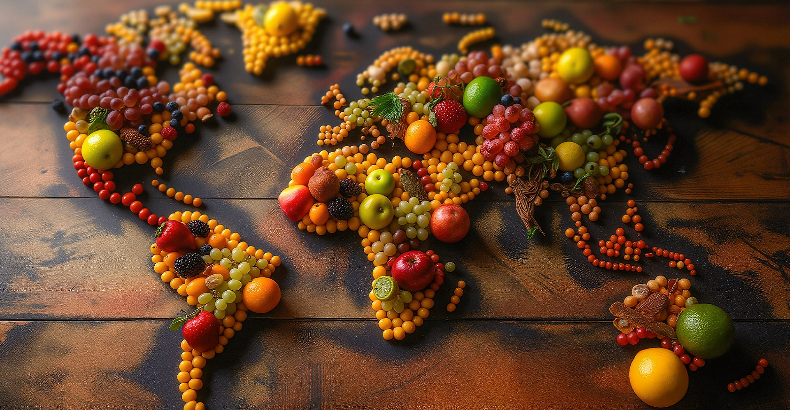
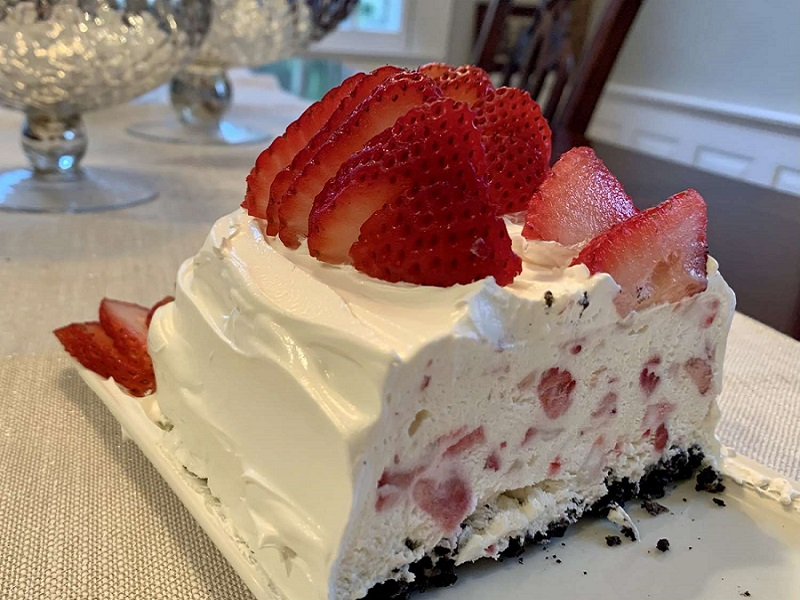
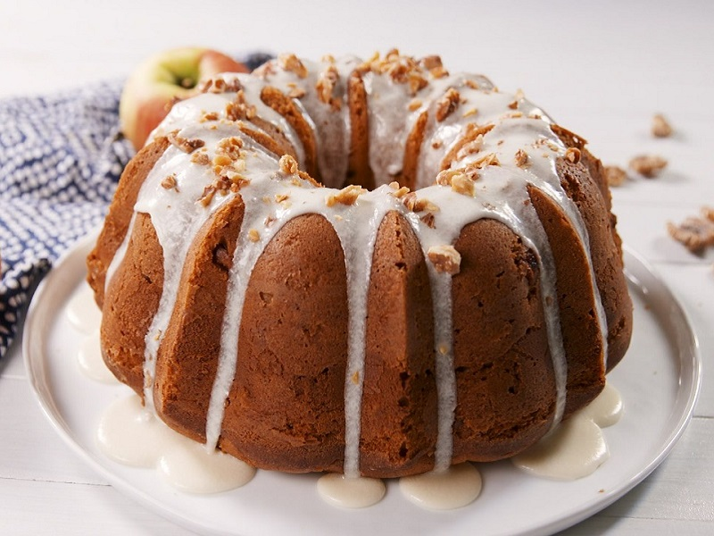
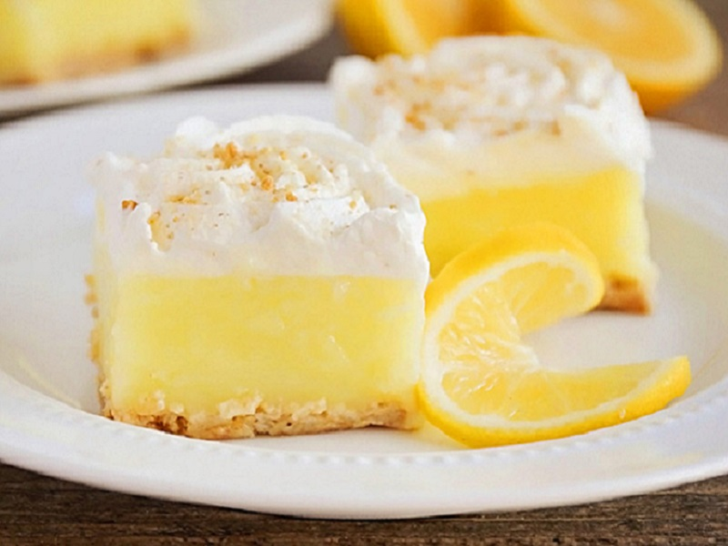
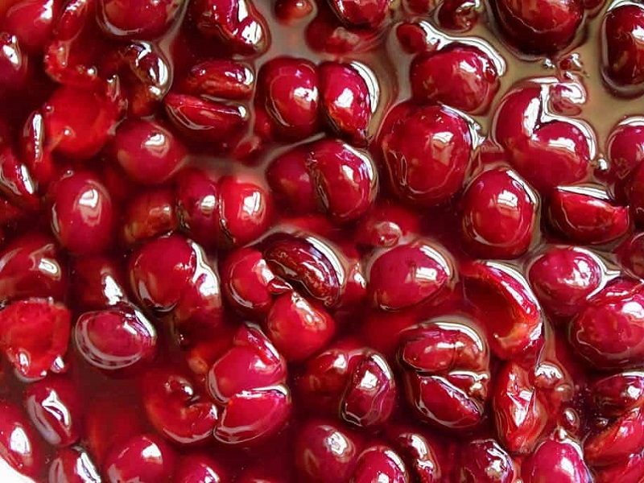
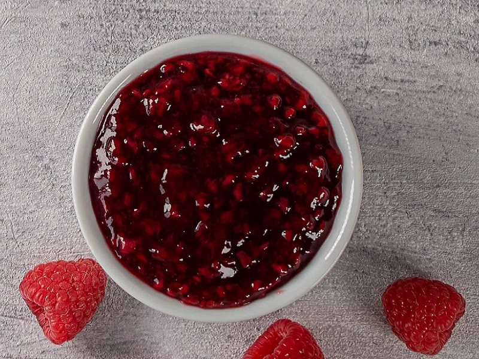

Our premium fruit fillings are crafted with up to 70% fruit content, ensuring an authentic and vibrant flavor. Perfectly balanced with natural sweetness and rich texture, they're ideal for enhancing baked goods, desserts, and breakfast creations. Whether you're layering them in cakes, filling pastries, or topping your morning toast, these fruit fillings deliver the essence of real fruit in every spoonful.

Bursting with the natural sweetness of ripe strawberries, our Strawberry Fruit Filling is your go-to solution for delicious, professional-quality desserts. With visible fruit chunks and a rich, glossy texture, it enhances everything from pies to pastries, cupcakes to cheesecakes.
Made without artificial flavors or colors, it delivers clean label quality and consistent performance in baking, freezing, or cooking applications.


Our Apple Fruit Filling is made with tender, juicy apple slices cooked in a lightly spiced syrup, bringing a perfect balance of sweetness and warmth. Ideal for classic apple pies, pastries, and turnovers, it offers consistent flavor and texture in every batch.
Bring a burst of sunshine to your baked goods with our Orange Fruit Filling. Crafted from real oranges and citrus zest, it offers a sweet and tangy profile that enhances cakes, pastries, and desserts with a bold citrus kick.
Our Mango Fruit Filling delivers the rich, juicy flavor of ripe mangoes in a smooth, golden filling. Perfect for tropical-themed desserts, pastries, and cakes, this filling adds a bright and refreshing taste with every use.
Our Lemon Fruit Filling delivers a bright, tangy flavor with the perfect touch of sweetness. Smooth and glossy, it's ideal for lemon tarts, pies, and filled desserts where a refreshing citrus bite is essential.


Packed with plump, juicy cherries in a rich red syrup, our Cherry Fruit Filling adds a vibrant and fruity touch to any dessert. It's perfect for traditional cherry pies, strudels, and all your baking creations that call for a bold cherry presence.
Our Raspberry Fruit Filling combines sweet and tangy raspberry flavor with a deep red color and real berry texture. Perfect for high-end pastries, tarts, and dessert fillings, it delivers both visual appeal and a burst of berry freshness.
